Хакатон · трек «Обратная связь сотрудников»
Работающая система: подача за минуту, ответственный и срок у каждого обращения, ответ автору, интеграция с Битрикс24 и 1С
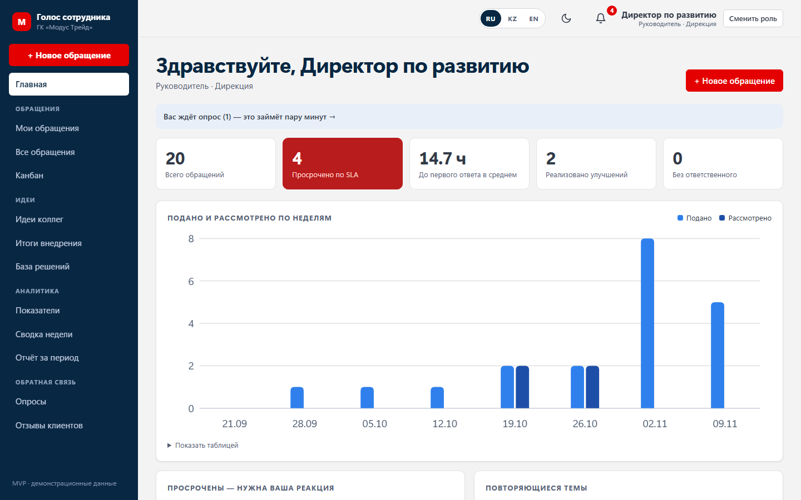
Проблема
Нет статуса, срока и ответа. Даже отказ не объясняют — и в следующий раз человек промолчит.
Одна и та же проблема всплывает в разных подразделениях, но руководитель видит её как разовые жалобы.
Непонятно, кто должен рассмотреть вопрос и когда. Обращение молча зависает, улучшения не случаются.
Итог: «всё равно ничего не изменится» — и сотрудники перестают предлагать
2 / 10Решение
Подаёт, видит статус и ответ, голосует за идеи коллег
Очередь со сроками, канбан, уточнения, шаблоны, задача в Битрикс24
Просрочки, показатели с целями, карта проблем, сводка недели
Маршрутизация, сроки и часовые пояса, оргструктура, хранение данных
Как это работает
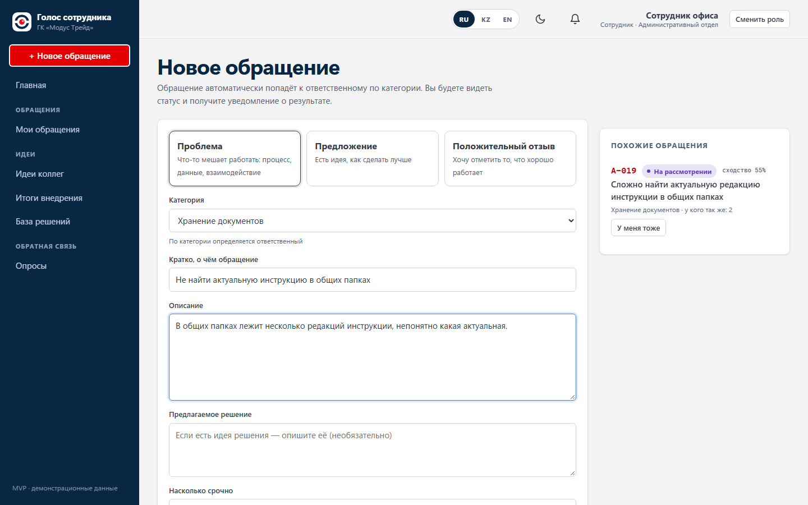
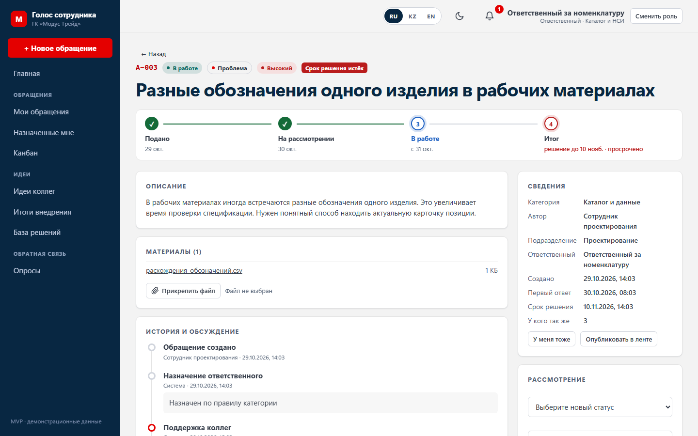
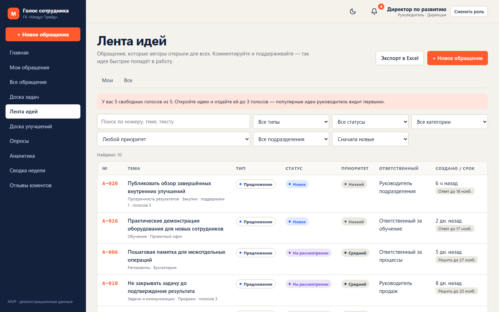
Руководителю
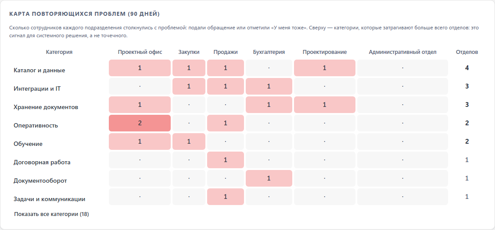
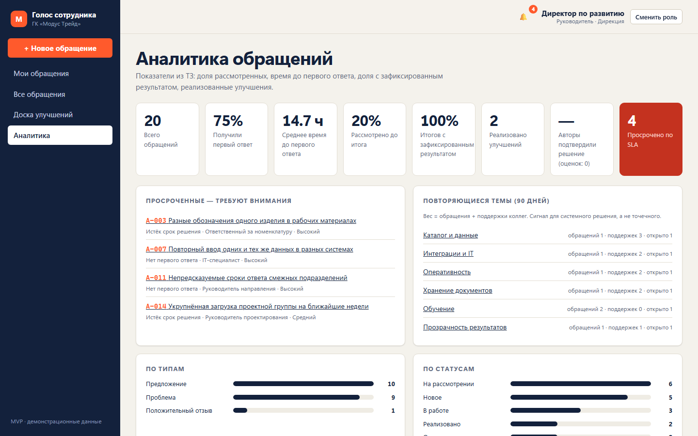
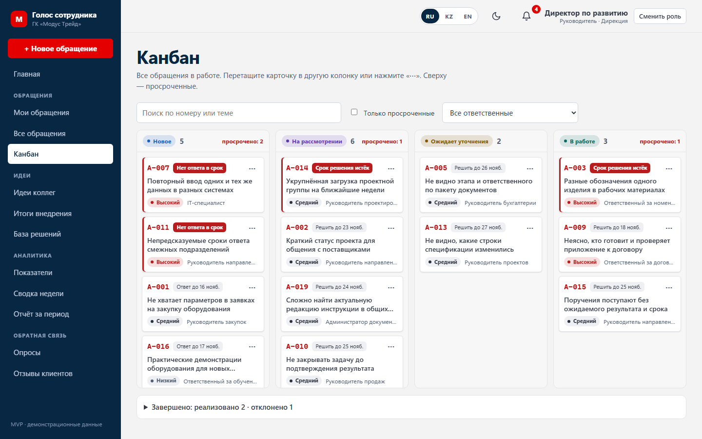
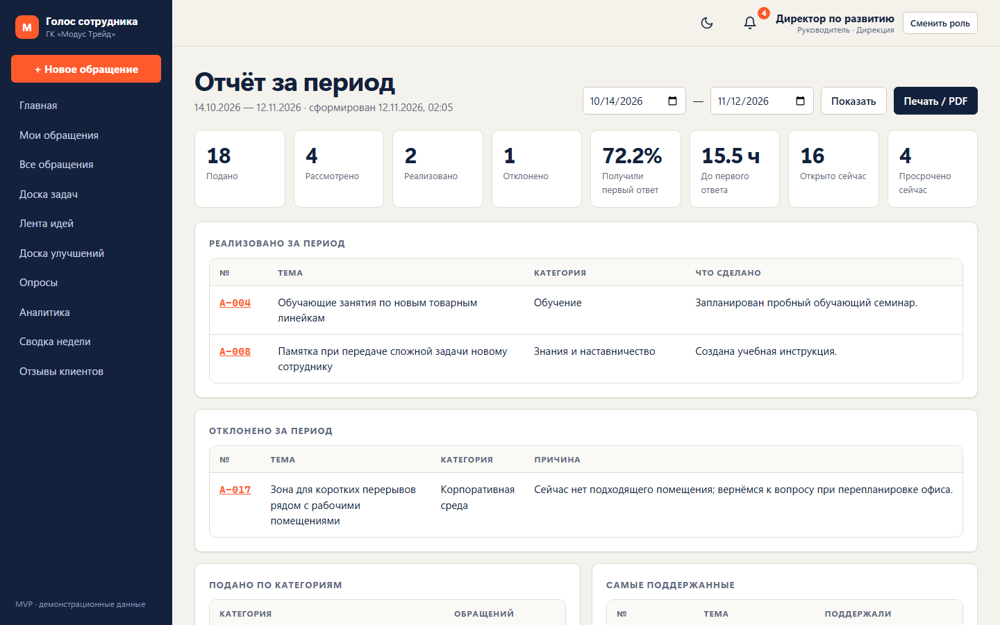
Битрикс24
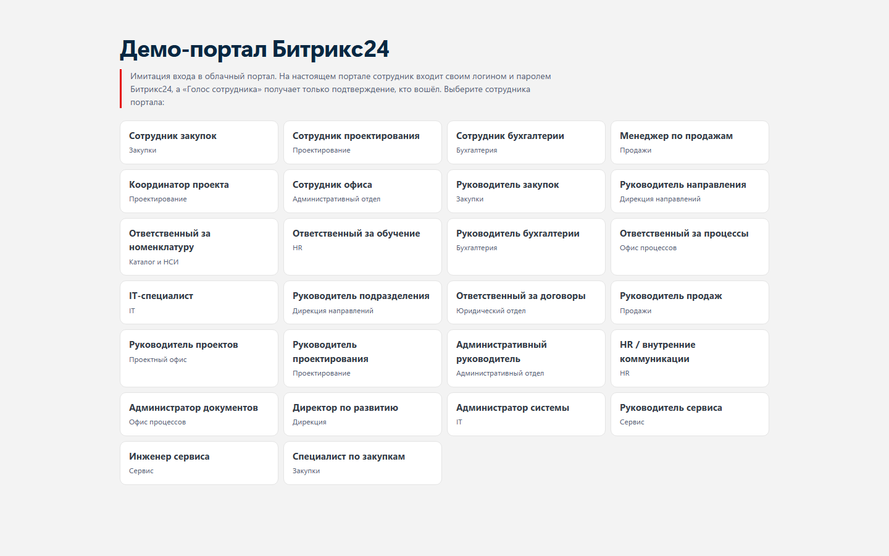
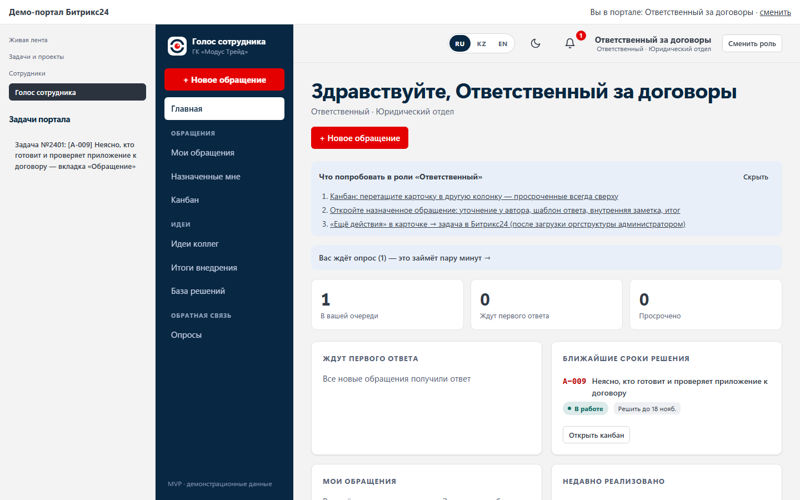
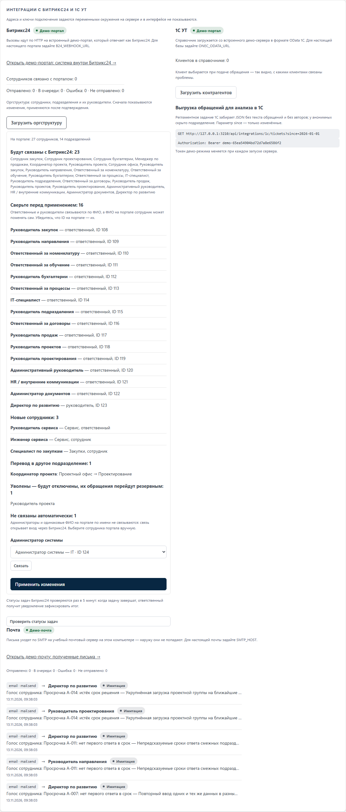
Интеграции
| Система | Зачем | Как | Сейчас |
|---|---|---|---|
| Битрикс24 — вход | Корпоративная учётная запись вместо пароля, система внутри портала | OAuth 2.0 локального приложения | работает |
| Битрикс24 — оргструктура | Сотрудники, подразделения, руководители; уволенные отключаются | REST user.get, department.get | работает |
| Битрикс24 — уведомления и задачи | Сообщать в портале; внедрять принятые идеи задачей | REST im.notify, tasks.task.add, опрос статуса | работает |
| 1С УТ | Клиенты в обращениях и аналитике; выгрузка обращений для анализа | OData, выгрузка по токену | работает |
| Почта и push | Копия уведомлений на рабочую почту и телефон | SMTP, Web Push (VAPID, RFC 8291) | работает |
Проверено на встроенном демо-портале, который отвечает в форматах REST Битрикс24 и OData 1С. К системам компании подключается переменными окружения — без изменения кода.
7 / 10Доверие
Анонимность и данные
Безопасность
Анонимный автор всё равно видит статус, получает ответ и отвечает на уточнения — оставаясь анонимным
8 / 10Качество
Технологии
Эксплуатация
Дальше
Всё, что на слайдах: подача, сроки, ответ автору, аналитика, Битрикс24 и 1С на демо-портале
Категории и ответственные компании, оргструктура из Битрикс24, цели показателей, инструктаж
«Сводка недели» спонсору, просрочки — на планёрке, итоги — в «Итогах внедрения»
Опрос участников и отчёт за период. 7 порогов из 10 — масштабирование на группу компаний
Ни одно предложение не теряется — каждое получает ответ
10 / 10Показ: клавиша F или Enter — по одному слайду на весь экран, стрелки ← → — переход, Esc — выход. PDF: Ctrl+P → «Сохранить как PDF».